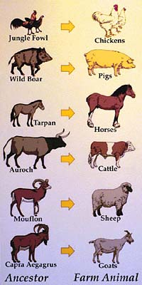
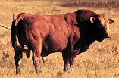

It is surprising that of all the thousands species of mammals and fish so few have significant economic importance.
Animals are used by man for many purposes including food, clothing, shelter and as a source of drugs and chemicals.
Can you name any drugs that were obtained from animal sources? Where did Banting and Best get their insulin from to treat sugar diabetes in humans?
As used by man in the past, we can also add tools and weapons to the list of animal products. For example, jawbones made good picks or axes and the leg bones of larger animals were mighty clubs.
Bow strings, ropes and binding were manufactured from rawhide strips.

A breed can be described as a group of animals having a common origin, which,
through selection and breeding have distinctive characteristics that set them apart from other members of the same type. These characteristics are passed uniformly to their offspring. An example of a breed is that of the modern cattle. These breeds belong to two species; Bos taurus and Bos inducus.
Commercial livestock operations make use of both purebred and crossbred animals.
Choices range from the use of registered purebred animals by the dairy farmer, to two species crosses
of beef cattle, to complex crosses in poultry and swine where there is no single species which seems to be dominant.
No matter what the choice, the preservation of distinct breeds still remains important in all
species of livestock. Preventing the disappearance of any species of cattle, pig or poultry, is
important for maintaining a source of genetic variety for future populations.
Without this source of genetic variation, continued specialized production will
reduce the livestock industry's ability to fulfil new desires of future consumers.
With the growth of larger and larger livestock operations using current technology to
remain competitive, preservation of distinct breeds becomes a greater challenge.
Livestock production is often divided into two general enterprises; - purebred breeders and
- commercial producers.
1. Purebred breeders raise animals that are only bred to animals of their own breed (for instance, if a breeder were raising Aberdeen-Angus cattle, like the ones shown at the left, he would never bring a Hereford animal into his herd). This breeder tries to raise animals with superior genetic qualities and traits for that breed. Favourable qualities and traits can be passed on and enhanced from generation to generation through careful management and selection.
Purebred animals are usually fairly valuable, they are sold to other breeders, or to commercial producers who value the special traits of the purebred animal, but they are not used primarily for meat production.
Animals that are purebred have registered pedigrees, and data accumulated on characteristics important to their breeding organization (Record of Performance). For a dairy cow this may include factors such as reproductive ability, ease of milking, temperament, and mothering ability.

2. Commercial livestock producers raise animals for the purpose of final sale of a product to the consumer (such as milk, meat or eggs). The commercial producers will buy purebred animals, using this stock to produce the product. Often commercial producers will use animals of different breeds to produce crossbred offspring (Such as a Landrace hog crossed with a Duroc) which may exhibit traits which exceed those of both parents (hybrid vigour). For instance, an Angus crossed with Limousin (shown at the left) may have offspring which show better maternal characteristics than either parent. Traits with low heritability (ability to be selected for and passed on to offspring) will usually respond well to crossbreeding.
|